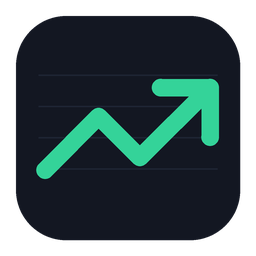
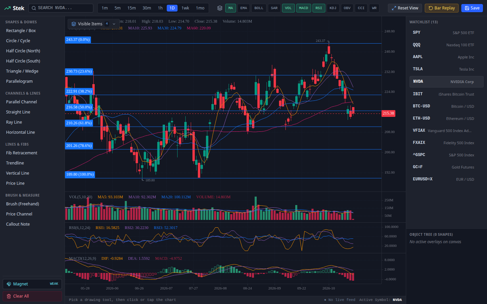

Free, open-source charting and technical analysis for your desktop. Stocks, ETFs, mutual funds, crypto, FX and futures.

Stek isn't notarized by Apple yet. Drag Stek from the .dmg into Applications and open it once. Then go to System Settings → Privacy & Security, scroll down and click Open Anyway.
If macOS says the app "is damaged", run this once in Terminal: xattr -dr com.apple.quarantine /Applications/Stek.app
The installer isn't code-signed yet, so SmartScreen warns about it. Click More info → Run anyway.
sudo apt install ./Stek-*-linux-amd64.deb, then open Stek from your app menu.chmod +x Stek-*.AppImage and run it. Ubuntu 22.04+ needs FUSE first: sudo apt install libfuse2 (24.04 and newer: libfuse2t64).1-minute to monthly candles, with years of history stored locally so charts open instantly.
Trendlines, channels, Fibonacci, shapes, half circles and a freehand brush. Saved per symbol, steady across timeframes.
MA, EMA, Bollinger Bands, SAR, volume, MACD, RSI, KDJ, OBV, CCI and Williams %R.
Rewind to any date and step through the market bar by bar.
Stocks, ETFs, mutual funds, indexes, crypto, FX and futures from exchanges worldwide.
Free polled quotes out of the box, or real-time streaming from your Interactive Brokers account.